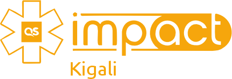
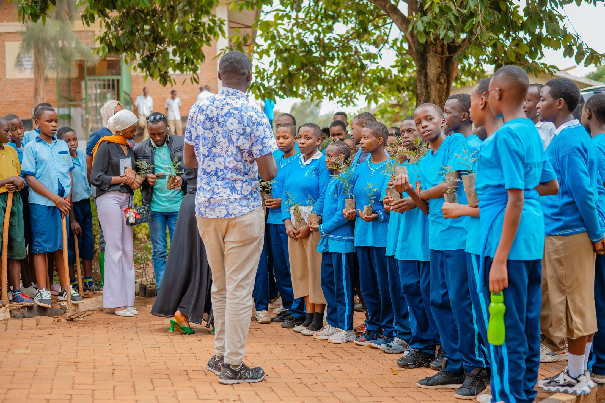
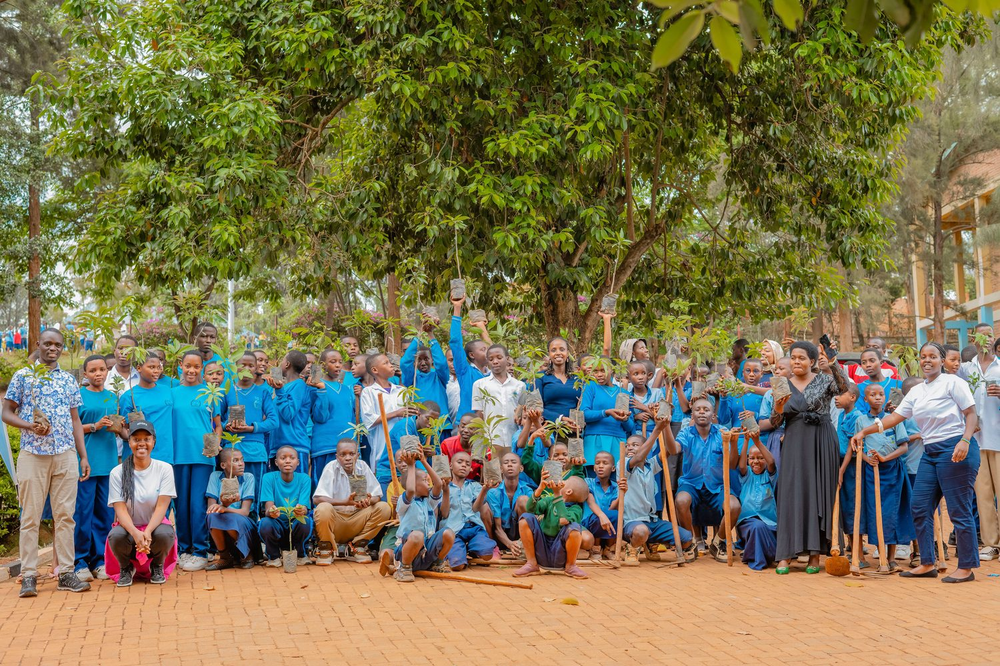
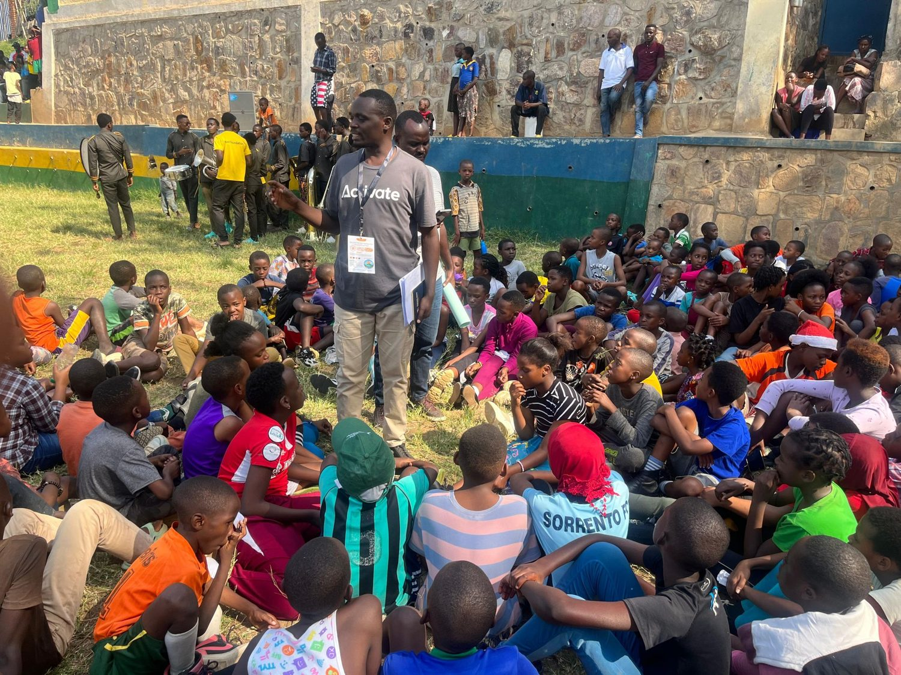
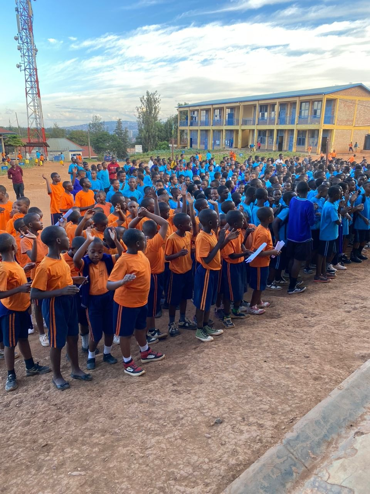
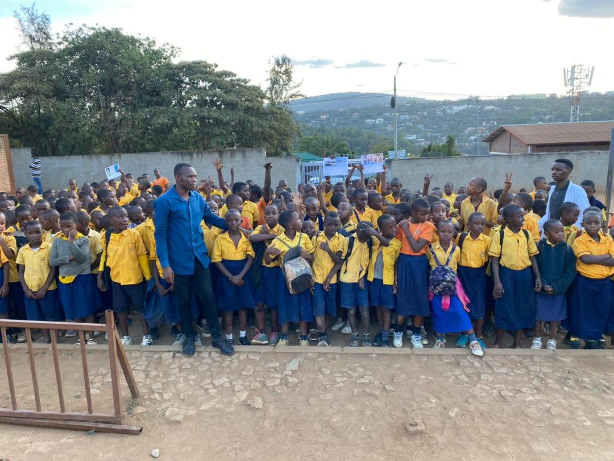
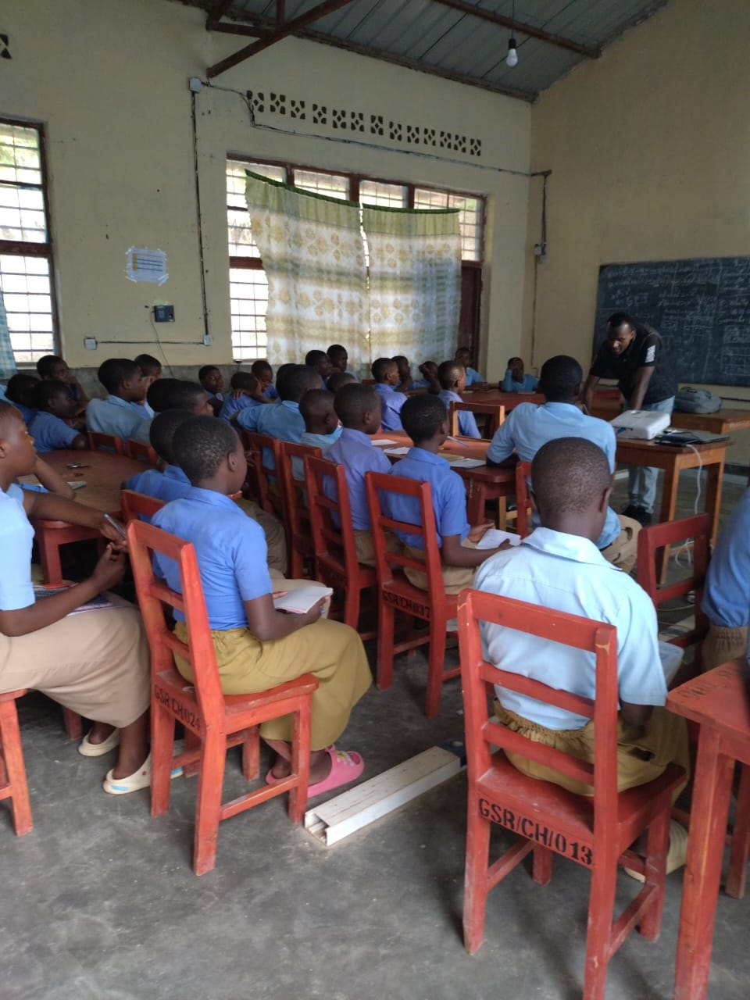
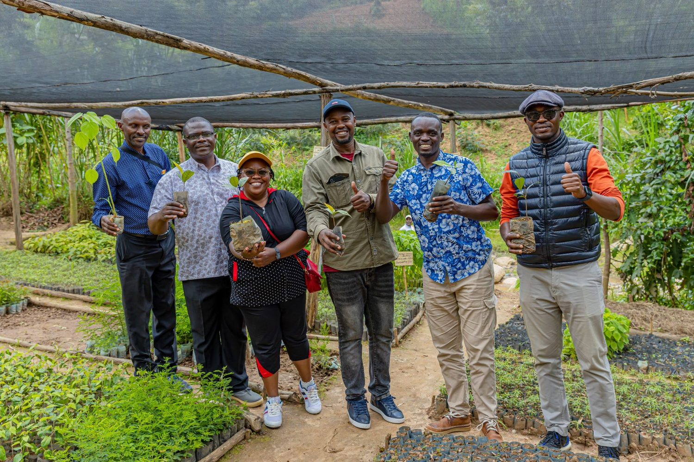
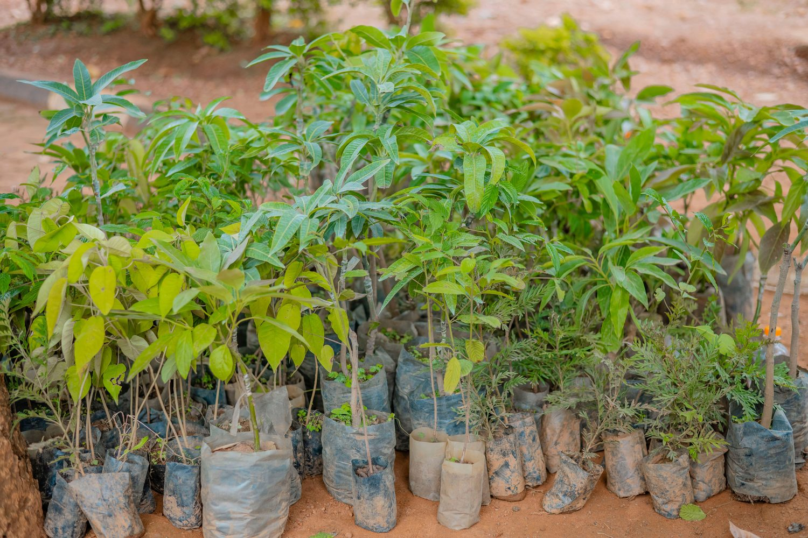
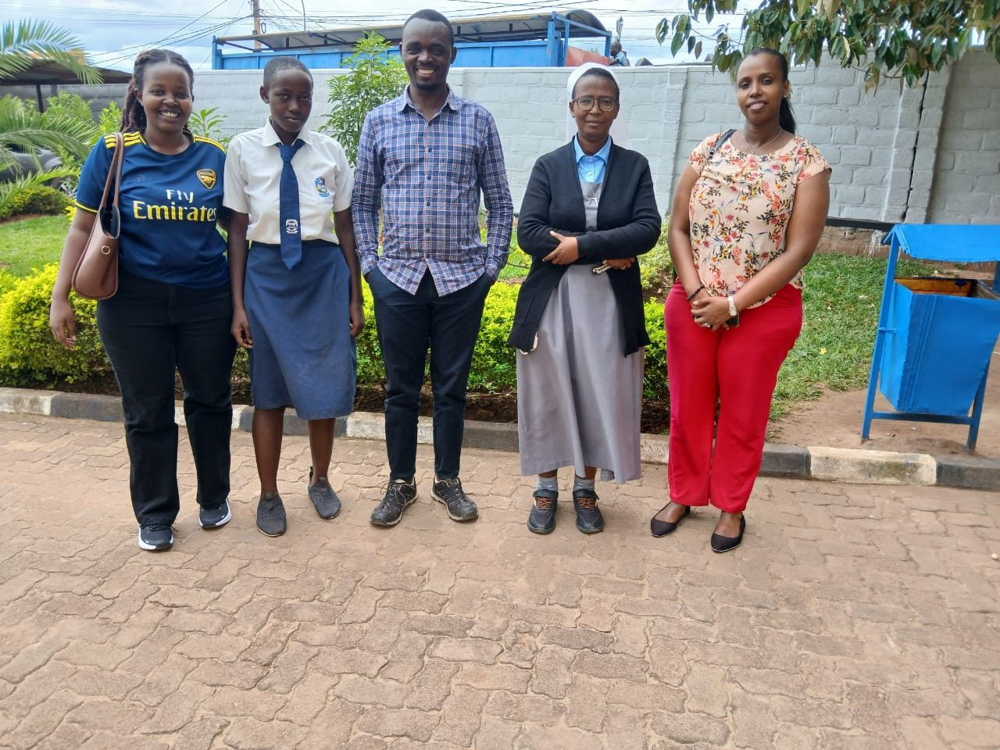

Registered in Rwanda
A Kigali-based council with formal governance and a clear mandate for community-centered development.

QS Impact Kigali Council
Kigali, Rwanda | Youth-led sustainable development
Mobilizing young leaders to build a greener, safer, and more inclusive Rwanda through practical SDG-driven initiatives.
A Kigali-based council with formal governance and a clear mandate for community-centered development.
University students, graduates, and young professionals turn local needs into measurable projects.
Workstreams connect education, climate resilience, safer public spaces, and strategic partnerships.
Mandate
QS Impact Kigali Council empowers young leaders to design and implement solutions that respond to real community priorities across Kigali and beyond.
Mission
Empower and engage young leaders in the implementation of SDG-driven initiatives that improve everyday life at community level.
Vision
Ignite and incubate youth-led innovations that accelerate sustainable development and shape a better future for all.
Promoting healthier practices and quality of life for communities.
Supporting equal opportunity for women and girls to lead and thrive.
Creating safer, inclusive, and resilient urban spaces.
Running campaigns, workshops, and restoration projects.
Building local and global networks to scale impact.
Programs
2025-2030 flagship
A five-year restoration commitment supporting Rwanda's green growth agenda through school-based tree planting, student environmental clubs, and climate education.

24-month transformation
A proposed transformation of a 7-hectare public school serving 2,700+ students into a safer, greener, more inclusive learning environment.

School leadership
Practical sustainability education for secondary students, introducing climate action, sustainable cities, and youth responsibility.

Student opportunity
A focused support initiative helping vulnerable high school students stay in school by covering school fees and essential requirements until graduation.

6-month micro-restoration
A focused community sports and wellbeing project to make a football playground safer, cleaner, and usable through the rainy season.
Global Days of Action
QS Impact Kigali Council joins the Global Days of Action as a practical climate education platform: reaching learners, strengthening environmental responsibility, and connecting local action to a global youth movement.
2026 documented reach
Across Global Days of Action 2026, the council delivered climate change, carbon offsetting, biodiversity, waste management, tree planting, and youth leadership sessions across GS Rwankuba, GS Kimisange, Gisozi I Primary School, EP Kimihurura, GS Rugote, and Kagugu.

QS Impact Kigali Council has been part of Global Days of Action since 2024, using the campaign to mobilize young people around measurable community action.
More than 700 students explored SDG 13, SDG 15, greenhouse gases, biodiversity, carbon offsetting, and practical mitigation actions.
More than 600 learners at GS Kimisange and 1,700+ young learners at Gisozi I Primary School connected daily choices with climate responsibility.
More than 900 learners at EP Kimihurura and 50 final-year students at GS Rugote joined sessions on climate science, conservation, and youth leadership.

GS Rwankuba
Discussion, questions, and next steps through the school environmental club.

Gisozi I Primary School
Waste management, green spaces, energy conservation, and household-level action.

EP Kimihurura
Age-appropriate sessions from simple daily actions to the science of emissions.

GS Rugote
A dedicated classroom session in Rutsiro District, extending impact beyond Kigali.
Impact
The council's 2025 work shows a practical operating model: identify community needs, mobilize young leaders, work with public and civil-society partners, and document measurable outcomes.



Youth engagement at Nyandungu Eco-Park with ARCOS Network and Living Lakes Network.
Practical sustainability training for secondary school students at GS Gihogwe.
More than 1,000 youth mobilized through community sites and learning activities.
Students, volunteers, and partners planted 750+ trees at Kimisange Secondary School.
Partnership
QS Impact Kigali Council is seeking partners who can help sustain tree survival, expand school programs, sponsor vulnerable high school students, fund safety infrastructure, and strengthen youth-led green action across Rwanda.
Support tools, materials, transport, school facilities, and project delivery.
Bring technical guidance in climate, education, infrastructure, or youth development.
Co-design projects with measurable indicators and long-term community ownership.
Support school fees and essential requirements for vulnerable high school students until graduation.
Support & donations
Supporters can contribute to a specific initiative, sponsor students, or make a general contribution. Payment details are shared through a verified follow-up instead of being posted publicly.
| Opportunity | Purpose | Typical support |
|---|---|---|
| School Fees Sponsorship | Help vulnerable high school students remain in school until graduation. | School fees and essential learning requirements. |
| 1000 Trees Initiative | Support the 2025-2030 restoration commitment. | Seedlings, tools, transport, planting days, and tree care. |
| Climate Education & Global Days of Action | Expand school outreach and youth climate learning. | Training materials, facilitation, transport, and documentation. |
| Safe Learning & Playground Restoration | Improve safer, cleaner school and youth spaces. | Drainage, sanitation, safety works, and youth activation. |
| General Support | Strengthen council operations and project delivery. | Coordination, reporting, communication, and monitoring. |
Online payment
Visa and card payments should be handled only through a secure bank-hosted payment link or approved payment provider checkout. No card details are collected on this website.
Request payment guidanceBank transfer
To reduce public exposure of bank details, transfer information is shared after a supporter submits a request through the partnership form.
Request transfer detailsThe council can verify the request, confirm the supported initiative, and send the correct transfer instructions directly.
Contact